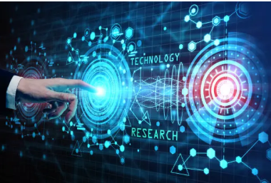

TIC

1)Difinition :
La technologie est l’ensemble des connaissances, des méthodes et des outils développés par l’être humain afin de faciliter la vie quotidienne, améliorer le travail et résoudre des problèmes dans différents domaines tels que l’éducation, la médecine, la communication, l’industrie et l’information.
Elle repose sur l’application des sciences pour transformer des idées en solutions pratiques, permettant de gagner du temps, d’augmenter l’efficacité et d’améliorer la qualité de vie.
2) Importance:
L'importance de la technologie
La technologie joue un rôle fondamental dans notre société moderne et son importance ne cesse de croître. Voici ses principaux apports :
Dans la vie quotidienne
- Communication : Connexion instantanée à travers le monde via smartphones et internet
- Accès à l'information : Knowledge démocratisée et accessible à tous
- Confort et efficacité : Automatisation des tâches domestiques et professionnelles
Dans le domaine économique
- Innovation et croissance : Création de nouveaux secteurs et emplois
- Productivité : Optimisation des processus industriels et services
- Globalisation : Échanges commerciaux facilités à l'échelle mondiale
Dans la santé
- Diagnostics avancés : Imagerie médicale, tests génétiques
- Traitements innovants : Robotique chirurgicale, télé médecine
- Recherche médicale : Accélération de la découverte de médicaments
Dans l'éducation
- Accès au savoir : Plateformes d'apprentissage en ligne
- Personnalisation : Adaptation des méthodes pédagogiques
- Collaboration : Outils de travail en groupe à distance
Défis et considérations
Malgré ses bénéfices, la technologie soulève des questions importantes :
- Fracture numérique : Inégalités d'accès aux technologies
- Vie privée : Protection des données personnelles
- Impact environnemental : Consommation énergétique et déchets électroniques
- Éthique : Intelligence artificielle, automatisation et emploi
3)Evolution hestorique:
La technologie a connu une évolution importante à travers les âges, marquée par plusieurs grandes étapes :
Préhistoire :
- Les premiers hommes utilisaient des outils en pierre, en bois et en os pour chasser, se protéger et préparer la nourriture.
- Invention du feu, qui a révolutionné la vie quotidienne
-
Antiquité :
- Développement de l’agriculture et de l’irrigation
- Invention de la roue, de l’écriture, et des premiers outils mécaniques.
Moyen Âge :
- Apparition des moulins à vent et à eau.
- Développement des techniques de construction et des instruments scientifiques rudimentaires.
Révolution industrielle (XVIIIe – XIXe siècle) :
- Machines à vapeur et mécanisation de la production.
- Début de l’industrialisation et de l’urbanisation.
XXe siècle :
- Électricité, automobiles, avions, télécommunications.
- en médecine et en chimie, développement de l’informatique.
XXIe siècle :
- Technologies de l’information et de la communication (Internet, smartphones, intelligence artificielle).
- Progrès dan la robotique, les biotechnologies et les énergies renouvelables.
| Peroide |
Evenement majour |
| Avant XIXe s |
Ecriture est imprimerie |
| XIXe siecle |
telegraph, telivsion, telephon ,radio |
| XXe siecle |
ordinateur et informatique |
| Anee 1990 |
devlopement de l'internet et de reseux numerique |
| Annes 200 |
samrt phone , tablet, et generation de TIC |